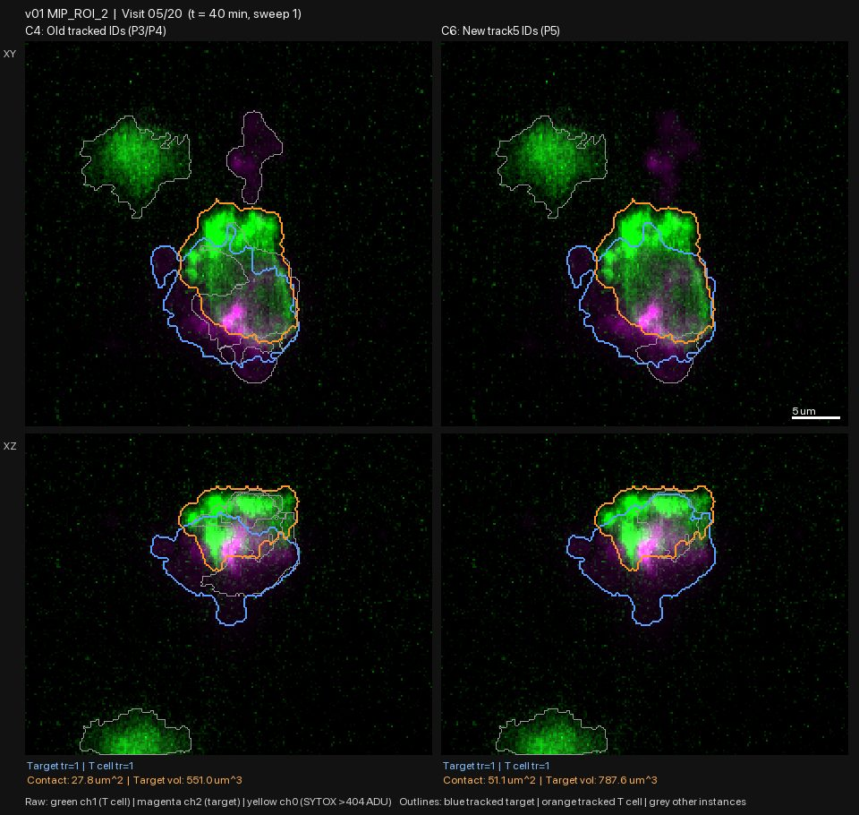
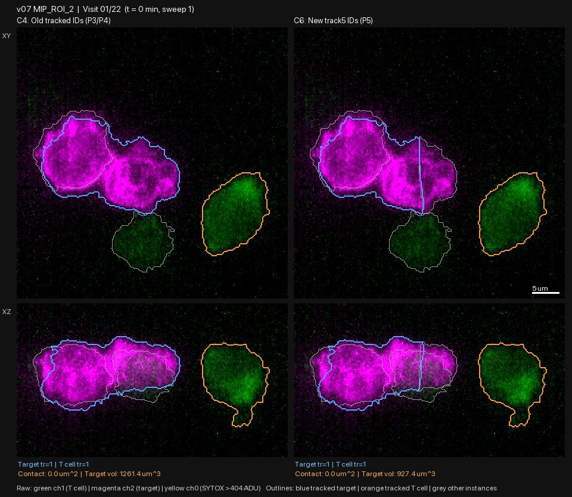
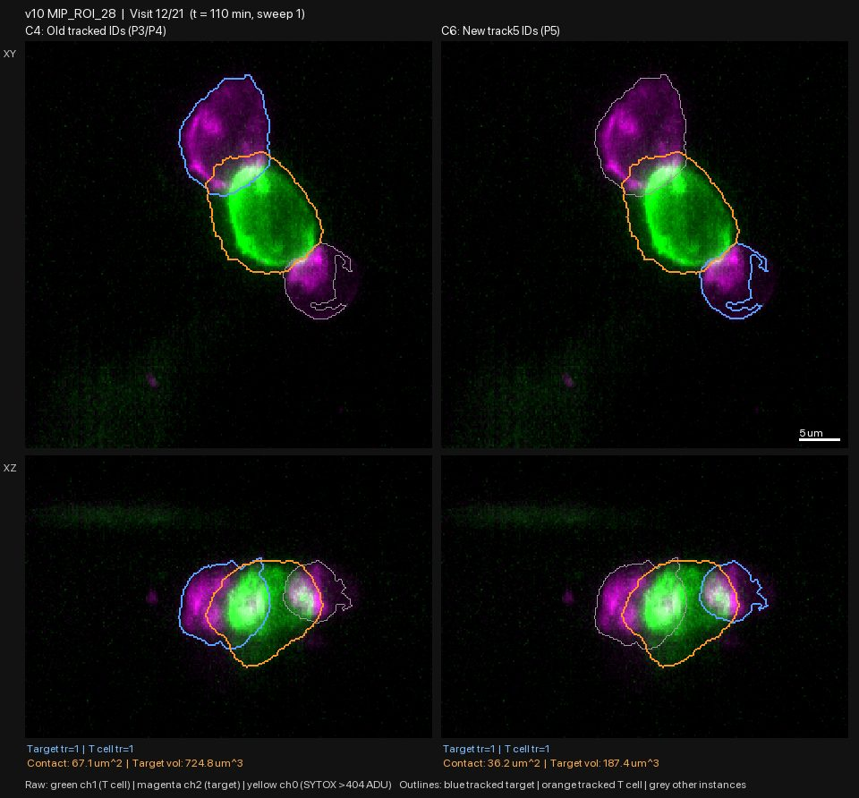
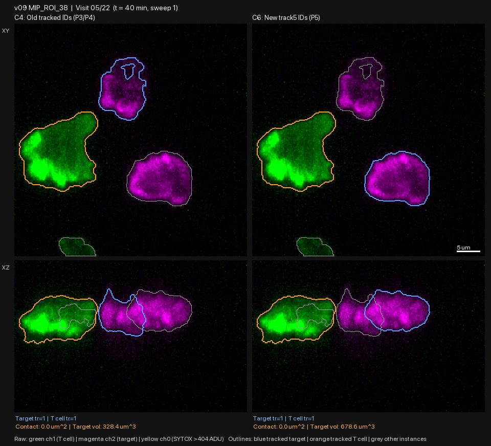

P6: the conservative splitter changes little and still cuts touching cells badly; ambiguous chambers set aside, 8 clean chambers remain
| ID | 2026-10-29-05-p6-conservative-splitter-mostly-unchanged-clean-set-of-8-chambers | Date | 2026-10-29 |
|---|---|---|---|
| Gate | G1 | Status | reviewed |
| Author | claude | Reviewers | claude, independent-frame-reviewers |
| Signoff | — | Commits | ed035bf |
| Datasets | raw_volumes, lab_masks | Protocols | gallery-review@v1 |
| Galleries | — | Supersedes / By | — / — |
Question
P5's splitter cut single cells and deleted dead cells. Does a rewritten, conservative splitter (C6) fix that, and does the whole-series tracker hold up on its outlines? The PI also decided to leave out anything too ambiguous for now.
What was run
agy (Argon High) wrote src/seg/split6.py, which starts from C4's cached outlines:
- never splits objects that look like one round cell, and never splits without a membrane gap and a real neck;
- never removes a dead (dye-filled), tracked or T-cell-touching object;
- removes small beads, haze and wall slabs, and re-merges over-split single cells.
It ran on all 419 visits; the tracker (track5) was re-run on the C6 outlines, and
C4 | C6 frames and movies were drawn in figures/pilot/p6/.
What was looked at
Before reviewing, the PI set aside the five chambers I had flagged as ambiguous (v05 ROI 8, v06 ROI 28, v11 ROI 15, v12 ROI 23, v13 ROI 28). Four fresh reviewers then opened every frame (311 visits) of the other 15 chambers. I re-checked four frames myself (v02 ROI 3 visit 20, v10 ROI 28 visit 12, v09 ROI 38 visit 5, v07 ROI 2 visit 1); they matched the reviewers.
Observations
C6 is mostly identical to C4. On the target outline, over 311 visits: better 37 (12%), same 230 (74%), mixed 24 (8%), worse 20 (6%). Better than P5's splitter, but the gains and losses sit in different places:
- Where C6 helps (all in simple chambers): fragment clutter inside the target is removed and the target becomes one clean outline (v01 ROI 2 visits 5, 8, 12); v08 ROI 24 and v08 ROI 38 get slightly cleaner; small debris is removed without deleting real tumour cells; the tracked T cell is corrected in v12 ROI 32 visits 1-4 (a small dim object was called the T cell). No dead dye-filled target lost its outline.

- Where C6 still cuts touching cells badly. In v07 ROI 2 (visits 1, 2, 17-19) and v07 ROI 26 (visits 1, 2, 6, 7, 18) it cuts along straight lines that follow no gap. C4 merges the pair there, so neither is right.

- Where the two methods follow different cells. v09 ROI 38, v10 ROI 28, v07 ROI 26 (from visit 10) and v09 ROI 29 (visits 16-22) follow different tumour cells in C4 and C6, and a reviewer cannot say which is "the target": two tumour cells touch the T cell, or neither does.


- One tracking-rule question. In v02 ROI 3 visit 20 the tracker drops the target (volume 0); C4 kept the magenta cell. It is not yellow and does not touch the T cell. This ties to the open kill-definition question.
Per-group tallies (target, better / same / mixed / worse): group A (v01 ROI 2, v01 ROI 32, v02 ROI 3, v02 ROI 32) 4 / 72 / 3 / 1; B (v03 ROI 6, v03 ROI 30, v04 ROI 24, v07 ROI 2) 1 / 75 / 1 / 5; C (v07 ROI 26, v08 ROI 24, v08 ROI 38, v09 ROI 29) 12 / 50 / 18 / 4; D (v09 ROI 38, v10 ROI 28, v12 ROI 32) 20 / 33 / 2 / 10. Note that most of D's "better" frames are the choice of cell in v09 ROI 38, which cannot be scored.
Decision
- Set aside as too ambiguous (PI decision, extended on review): v05 ROI 8, v06 ROI 28, v11 ROI 15, v12 ROI 23, v13 ROI 28 (decided before review), plus v07 ROI 2, v07 ROI 26, v09 ROI 29, v09 ROI 38, v10 ROI 28 (the two methods follow different cells, or the splitter cuts through the pair). I added these five; they are easy to bring back.
- Merge-limited, not in the clean set: v01 ROI 32, v03 ROI 6 (merges that neither C4 nor C6 fixes).
- Clean set (8 chambers): v01 ROI 2, v02 ROI 3, v02 ROI 32, v03 ROI 30, v04 ROI 24, v08 ROI 24, v08 ROI 38, v12 ROI 32. There C6 with the whole-series tracker is better in 12 frames, worse in 1 (v02 ROI 3 visit 20, tracking rule), and the same elsewhere. It is adopted as the working method for this set, not as a general fix.
- The splitter does not solve touching tumour cells. Chambers where the target needs a split are set aside for now.
Open issues
- Kill definition (Fei lab): v02 ROI 3 visit 20 and the late deaths in v02 ROI 3 and v03 ROI 30.
- 10 of 20 chambers are set aside. If the full 502 behave the same, about half the data is unusable. P7 should first test how often a chamber has an unambiguous target.
- Reviewer counts are approximate and are model notes (
lab/reviews/p6_frames_{a,b,c,d}.md); I spot-checked four frames.